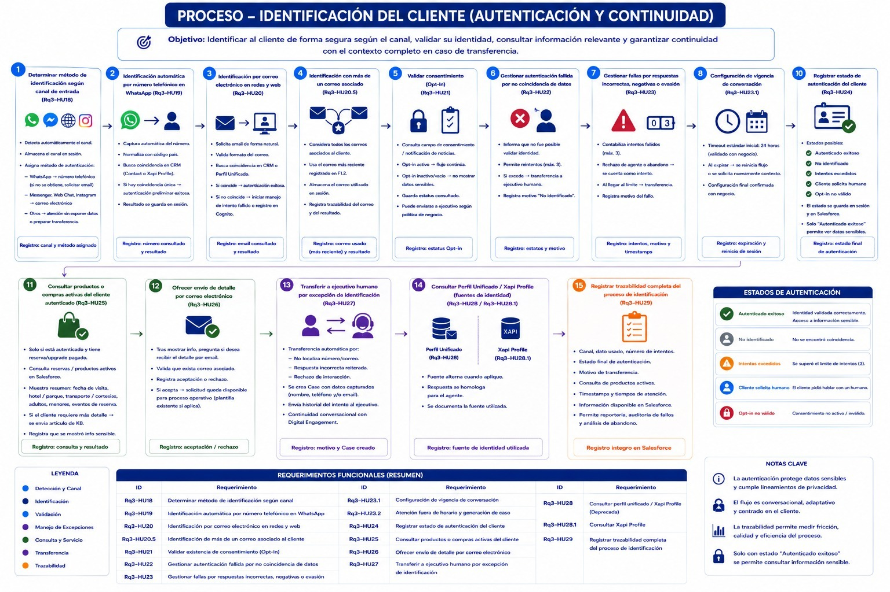

Proceso — Identificación del Cliente (Autenticación y Continuidad)
Agentforce
Data Cloud
Estimado del equipo de Consumption Leads con base en el proceso de identificación compartido por Nuvalia para Xcaret

1 · Rq3-HU18
Determinar método de identificación según canal — lógica de enrutamiento
Sin costo — 0 cr (no invoca acción ni consulta)
Camino: 🟦 Ambos
2 · Rq3-HU19
🔵 Standard Agent Action — identificación automática por número (WhatsApp)
1 acción · 20 cr prod / 16 cr sandbox
Camino: 🟦 Ambos (según canal)
3 · Rq3-HU20
🔵 Standard Agent Action — identificación por correo electrónico
1 acción · 20 cr prod / 16 cr sandbox
Camino: 🟦 Ambos (según canal)
4 · Rq3-HU20.5
Reutiliza el resultado ya devuelto por HU20 — sin nueva invocación
Sin costo — 0 cr
Camino: 🟦 Ambos
5 · Rq3-HU21
Lectura de campo de consentimiento ya consultado — sin acción/consulta nueva
Sin costo — 0 cr
Camino: 🟦 Ambos
6 · Rq3-HU22
Respuesta conversacional en el mismo turno del LLM (reintentos)
Sin costo — 0 cr
Camino: 🟥 Camino B (si falla)
7 · Rq3-HU23
Conteo de intentos en memoria de sesión — sin escritura a Salesforce
Sin costo — 0 cr
Camino: 🟥 Camino B (si falla)
8 · Rq3-HU23.1
Parámetro de configuración de sesión/timeout — no invoca acción
Sin costo — 0 cr
Camino: 🟦 Ambos
9 · Rq3-HU23.2
🔵 Standard Agent Action — genera Case por atención fuera de horario
1 acción · 20 cr prod / 16 cr sandbox
Camino: 🟧 Caso especial (fuera de horario)
10 · Rq3-HU24
🔵 Standard Agent Action — registrar estado final de autenticación en Salesforce
1 acción · 20 cr prod / 16 cr sandbox
Camino: 🟦 Ambos
11 · Rq3-HU25
🔵 Standard Agent Action — consultar productos/reservas activas en Salesforce
1 acción · 20 cr prod / 16 cr sandbox
Camino: 🟩 Camino A (autenticado exitoso)
12 · Rq3-HU26
🔵 Standard Agent Action — validar/enviar detalle por correo (Flow/Apex)
1 acción · 20 cr prod / 16 cr sandbox
Camino: 🟩 Camino A
13 · Rq3-HU27
🔵 Standard Agent Action — handoff + creación de Case por excepción de identificación
1 acción · 20 cr prod / 16 cr sandbox
Camino: 🟥 Camino B (transferencia)
14 · Rq3-HU28 / HU28.1
🔵 Standard Agent Action — consulta a Perfil Unificado / Xapi Profile (misma fuente, directo a Core CRM)
1 acción · 20 cr prod / 16 cr sandbox
Sin cargo de Data Cloud — confirmado
Camino: 🟦 Ambos (opcional)
15 · Rq3-HU29
Logging/auditoría en background — reutiliza la escritura del registro de estado
Sin costo — 0 cr
Camino: 🟦 Ambos
Diagrama de proceso compartido por Nuvalia (2026-08-25) · Pasa sobre cada nodo para ver la acción Agentforce
1. Resumen por Camino
| Escenario |
HUs con acción facturable |
Acciones |
Créditos Prod |
Créditos Sandbox |
Data Service Credits |
| Camino A — Autenticado exitoso + consulta + envío por correo |
HU19/HU20, HU24, HU25, HU26 |
4 |
80 | 64 |
—
Sin consulta a Perfil Unificado |
| Camino B1 — Transferencia con cliente identificado (Opt-in no válido / Cliente solicita humano) |
HU19/HU20, HU24, HU27
+ opcional HU25, HU28 (HU28 pendiente de confirmar — ver nota abajo) |
3–5 |
60–100 | 48–80 |
— |
| Camino B2 — Transferencia por "No identificado" / Intentos excedidos (agota los 3 intentos de HU22/HU23, sin match en CRM) |
HU19/HU20 (×1–3 intentos), HU27
Sin HU24 — no existe registro de cliente que actualizar; el detalle del intento se guarda en el Case creado por HU27 |
2–4 |
40–80 | 32–64 |
— |
| Caso especial — Atención fuera de horario |
HU19/HU20, HU23.2, HU24 |
3 |
60 | 48 |
— |
| Estimación blended (~4 acciones promedio) |
Ponderado (propuesto): 70% Camino A · 25% Camino B (B1 + B2) · 5% caso especial |
~4 |
~78* | ~62* |
—
Confirmado: sin cargo de Data Cloud |
* Pendiente de recalcular: el 25% de "Camino B" todavía no está repartido entre B1 (cliente identificado, 60–100 cr) y B2 ("No identificado"/Intentos excedidos, 40–80 cr según intentos) —
ver Preguntas Pendientes. Además, el extremo alto de B1 (100 cr) depende de que HU28 sea una acción de Agentforce — ver evaluación de HU28 abajo.
Rango de créditos por conversación:
Toda conversación incluye al menos 1 acción de identificación (HU19/HU20). El registro de estado (HU24, +20 cr) solo aplica cuando sí hubo coincidencia en CRM (Camino A o B1) —
si el cliente agota los 3 intentos sin ninguna coincidencia (Camino B2), no hay Contact al cual escribirle ese estado; el detalle del intento queda en el Case que crea HU27.
A partir de ahí, el costo escala según el desenlace: 40–80 cr si es "No identificado"/Intentos excedidos (según cuántos intentos con datos distintos), 60 cr si el cliente identificado pide humano o tiene Opt-in no válido, o si hay atención fuera de horario,
80 cr si el cliente se autentica y consulta sus productos/reservas, y hasta 100 cr si además se consulta el Perfil Unificado antes de escalar (sujeto a confirmar quién ejecuta HU28).
El cliente confirmó que no utiliza Data 360 para unificación de perfiles, por lo que esa consulta no agrega Data Service Credits — todo el costo es en Flex Credits de Agentforce.
Lógica blended (estimación propuesta, pendiente de confirmar con Nuvalia):
Se asume ~70% Camino A (autenticación exitosa + consulta + correo, 4 acciones · 80 cr) y ~25% Camino B (B1 60–100 cr según sub-variante, B2 40–80 cr según intentos), y ~5% caso especial fuera de horario (3 acciones · 60 cr).
Promedio ponderado: ~4 acciones · ~78 créditos prod por conversación (~62 cr sandbox).
Nuvalia aún no ha compartido el % real de conversaciones por escenario, ni el reparto entre B1/B2 — ver Preguntas Pendientes para pedir su confirmación/corrección.
Tasa de conversión: 20 créditos por acción en producción · 16 créditos por acción en sandbox.
2. Paths Detallados
Path A — Autenticado exitoso, consulta y envío de correo (4 acciones)
| # | Acción real | HUs que cubre | Data Service Credits |
|---|
| 1 | Identificar al cliente según canal (número en WhatsApp o correo en web/redes) | HU18 + HU19/HU20 + HU20.5 + HU21 | — |
| 2 | Registrar estado de autenticación (Autenticado exitoso) | HU24 | — |
| 3 | Consultar productos o reservas activas en Salesforce | HU25 | — |
| 4 | Ofrecer y registrar envío de detalle por correo | HU26 | — |
| — | Registrar trazabilidad completa (reutiliza la escritura del paso 2) | HU29 | — |
Path B1 — Transferencia con cliente identificado (3 a 5 acciones)
Si HU19/HU20 sí encuentran coincidencia, el flujo por defecto sigue hacia Camino A. B1 cubre los casos donde, pese a estar identificado, igual se transfiere: Opt-in no válido (no se puede mostrar información sensible) o Cliente solicita humano explícitamente.
| # | Acción real | HUs que cubre | Data Service Credits |
|---|
| 1 | Identificar al cliente según canal (hay coincidencia en CRM) | HU18 + HU19/HU20 | — |
| 2 | Registrar estado de autenticación (Opt-in no válido / Cliente solicita humano) sobre el registro ya encontrado | HU24 | — |
| 3 opcional | Consultar productos/reservas antes de escalar (variante extendida) | HU25 | — |
| 4 | Transferir a ejecutivo humano y crear Case con datos capturados | HU27 | — |
| 5 opcional | Consultar Perfil Unificado / Xapi Profile para homologar la respuesta antes de transferir (variante extendida) — pendiente de confirmar quién ejecuta esta consulta, ver nota abajo | HU28 / HU28.1 | — |
| — | Registro de trazabilidad (sin costo) | HU29 | — |
Evaluación de HU28 (Consultar Perfil Unificado / Xapi Profile):
En el diagrama, el nodo de HU28 (paso 14) está dibujado después del nodo de HU27 "Transferir a ejecutivo humano" (paso 13), no antes. La descripción de HU28 dice "Respuesta se homologa para el agente" —
ambiguo entre "para el agente conversacional (Agentforce)" o "para el ejecutivo humano" que recibe el Case. Si la consulta ocurre después del handoff, es razonable que sea el ejecutivo humano quien la haga desde su propia consola de Salesforce —
en cuyo caso no sería una acción de Agentforce y no generaría los 20/16 cr adicionales que hoy se le atribuyen en la variante extendida de B1.
Esto está pendiente de confirmar con Nuvalia/diseño — ver Preguntas Pendientes.
Path B2 — Transferencia por "No identificado" / Intentos excedidos, sin match en CRM (2 a 4 acciones)
| # | Acción real | HUs que cubre | Data Service Credits |
|---|
| 1 a 3 | Intentar identificar al cliente según canal — 1 búsqueda en CRM por cada número/correo distinto que el cliente proporciona (máx. 3 intentos, contados por HU23) | HU18 + HU19/HU20 (repetido) | — |
| — | No aplica — al no existir coincidencia, no hay registro de cliente sobre el cual actualizar el estado de autenticación | HU24 no aplica | — |
| 4 | Transferir a ejecutivo humano y crear Case con los datos capturados (número/correo intentados, motivo "No identificado") | HU27 | — |
| — | Conteo de intentos, mensajes de reintento y registro de trazabilidad (sin costo) | HU22 + HU23 + HU29 | — |
El número real de intentos con datos distintos (vs. simples correcciones de formato del mismo dato) está pendiente de confirmar — ver Preguntas Pendientes.
3. Acciones Agentforce por HU

Soy Einstein. En este proceso, identificar, registrar el estado y escalar son las acciones que sí cuentan como acción de Agentforce. El resto es lógica conversacional o de sesión, sin costo.
Columna «Camino»: 🟦 Ambos caminos · 🟩 Solo Camino A (autenticado exitoso) · 🟥 Solo Camino B (transferencia) · 🟧 Caso especial (fuera de horario)
| HU |
Descripción |
Paso del diagrama |
Tipo de acción |
Créd. Prod |
Créd. Sandbox |
Camino |
| Rq3-HU19 |
Es acción de Agentforce porque busca coincidencia en CRM (Contact o CRM Profile) a partir del número de WhatsApp — se factura como acción estándar. |
Identificación automática por número (WhatsApp) |
Standard Agent Action (búsqueda CRM) |
20 | 16 |
🟦 Ambos (según canal) |
| Rq3-HU20 |
Consulta CRM o Perfil Unificado por correo electrónico para identificar al cliente — acción estándar de agente. |
Identificación por correo electrónico |
Standard Agent Action (búsqueda CRM) |
20 | 16 |
🟦 Ambos (según canal) |
| Rq3-HU23.2 |
Crea un registro de Case en Salesforce mediante Flow/Apex invocado por el agente — operación de Core CRM facturable. |
Atención fuera de horario y generación de caso |
Standard Agent Action (create record) |
20 | 16 |
🟧 Caso especial |
| Rq3-HU24 |
Escribe/actualiza el estado final de autenticación en el registro del cliente en Salesforce — acción estándar de agente. |
Registrar estado de autenticación del cliente |
Standard Agent Action (update record) |
20 | 16 |
🟦 Ambos |
| Rq3-HU25 |
Consulta reservas/productos activos en Salesforce (Core CRM) mediante acción estándar de agente. |
Consultar productos o compras activas |
Standard Agent Action (query CRM) |
20 | 16 |
🟩 Camino A |
| Rq3-HU26 |
Requiere una acción (Flow/Apex) para validar el correo y enviar/registrar el detalle — operación de Core CRM. |
Ofrecer envío de detalle por correo electrónico |
Standard Agent Action (Flow/Apex) |
20 | 16 |
🟩 Camino A |
| Rq3-HU27 |
Crea un Case con los datos capturados mediante acción estándar de agente — handoff explícito a ejecutivo humano. |
Transferir a ejecutivo humano por excepción |
Standard Agent Action (handoff + create record) |
20 | 16 |
🟥 Camino B |
| Rq3-HU28 / HU28.1 |
Confirmado con el cliente: Perfil Unificado y Xapi Profile son la misma fuente, y no se utiliza Data 360 (Data Cloud) para unificación de perfiles — la consulta es directa a Core CRM, solo genera el costo de la acción estándar de Agentforce. |
Consultar Perfil Unificado / Xapi Profile |
Standard Agent Action (query CRM) |
20 | 16 |
🟦 Ambos (opcional) |
4. Consumo de Data Service Credits
Sin consumo confirmado de Data Service Credits.
El cliente confirmó que Perfil Unificado y Xapi Profile (HU28 / HU28.1) son la misma fuente y que no utiliza Data 360 (Data Cloud) para unificación de perfiles —
esa consulta, igual que el resto del proceso (HU18–27, HU29), se resuelve directo contra Core CRM (Contact, Case, reservas).
Ninguno de los pasos documentados invoca Knowledge, Real-Time Profile u otra fuente de Data Cloud, por lo que este flujo no proyecta cargo adicional de Data Service Credits.
5. Proyección Mensual de Créditos
Basada en el blended propuesto de ~4 acciones · ~78 créditos por conversación en producción (~62 cr sandbox).
Las columnas de la derecha muestran los dos extremos del rango real: 60 cr (transferencia simple o caso fuera de horario) y 100 cr (transferencia con consulta a Perfil Unificado).
El blended es una estimación propuesta — Nuvalia aún no ha confirmado el % real de conversaciones por escenario, ver Preguntas Pendientes.
| Conversaciones / mes |
Créditos Prod (~78 cr/conv blended) |
Créditos Sandbox (~62 cr/conv blended) |
Créditos Prod — mínimo puro (60 cr) |
Créditos Prod — máximo puro (100 cr — con Perfil Unificado) |
Data Service Credits |
| 500 |
39,000 |
31,000 |
30,000 |
50,000 |
— |
| 1,000 |
78,000 |
62,000 |
60,000 |
100,000 |
— |
| 5,000 |
390,000 |
310,000 |
300,000 |
500,000 |
— |
| 10,000 |
780,000 |
620,000 |
600,000 |
1,000,000 |
— |
| 25,000 |
1,950,000 |
1,550,000 |
1,500,000 |
2,500,000 |
— |
| 50,000 |
3,900,000 |
3,100,000 |
3,000,000 |
5,000,000 |
— |
Anexo — HUs sin costo Agentforce (Identificación del Cliente)
Estas historias de usuario no generan acciones facturables de Agentforce. Se incluyen aquí como referencia de comportamiento del agente.
| HU |
Descripción |
Paso del diagrama |
Tipo de acción |
Créd. Prod |
Créd. Sandbox |
Camino |
| Rq3-HU18 |
Es lógica condicional de enrutamiento por canal; no invoca ninguna acción de agente ni consulta a CRM/Data Cloud. |
Determinar método de identificación según canal |
Lógica de enrutamiento |
0 | 0 |
🟦 Ambos |
| Rq3-HU20.5 |
Reutiliza los datos ya devueltos por la consulta de HU20; no dispara una nueva acción salvo que derive a la transferencia (ya cubierta en HU27). |
Identificación con más de un correo asociado |
Reutiliza resultado de HU20 |
0 | 0 |
🟦 Ambos |
| Rq3-HU21 |
Lee un campo del mismo registro ya consultado en la identificación previa; no es una acción ni consulta adicional. |
Validar consentimiento (Opt-In) |
Lectura de campo ya consultado |
0 | 0 |
🟦 Ambos |
| Rq3-HU22 |
Es respuesta conversacional generada por el agente dentro del mismo turno; el registro formal solo ocurre en HU24. |
Gestionar autenticación fallida por no coincidencia |
Sin costo — respuesta en el mismo turno del LLM |
0 | 0 |
🟥 Camino B |
| Rq3-HU23 |
Conteo de intentos fallidos en memoria de sesión, sin escritura a Salesforce hasta el registro final en HU24. |
Gestionar fallas por respuestas incorrectas o evasión |
Sin costo — conteo en memoria de sesión |
0 | 0 |
🟥 Camino B |
| Rq3-HU23.1 |
Es un parámetro de configuración de sesión/timeout; no invoca ninguna acción ni consulta. |
Configuración de vigencia de conversación |
Sin costo — parámetro de configuración |
0 | 0 |
🟦 Ambos |
| Rq3-HU29 |
Es logging/auditoría de fondo (background automation); probablemente reutiliza la misma escritura del registro de estado (HU24). |
Registrar trazabilidad completa del proceso |
Sin costo — logging de auditoría (background) |
0 | 0 |
🟦 Ambos |